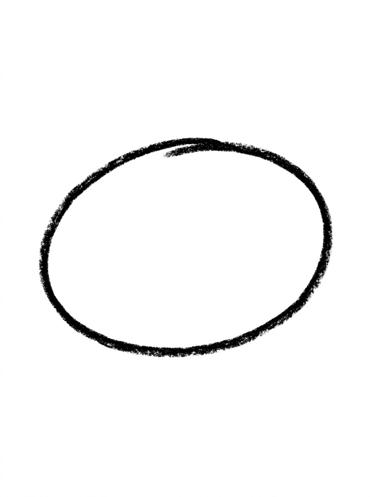
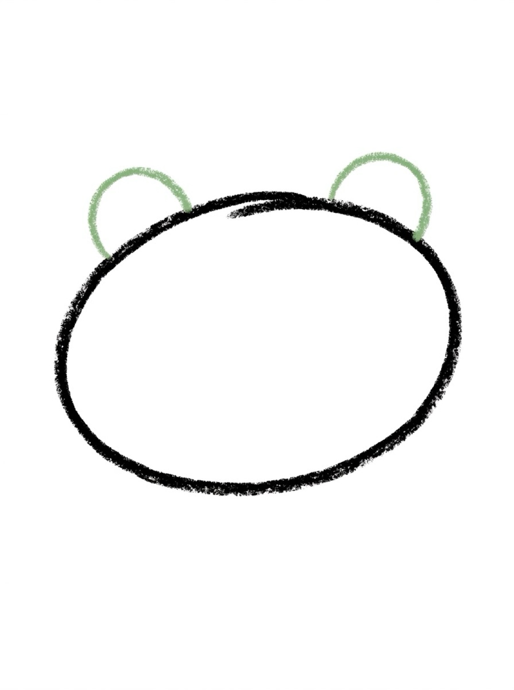
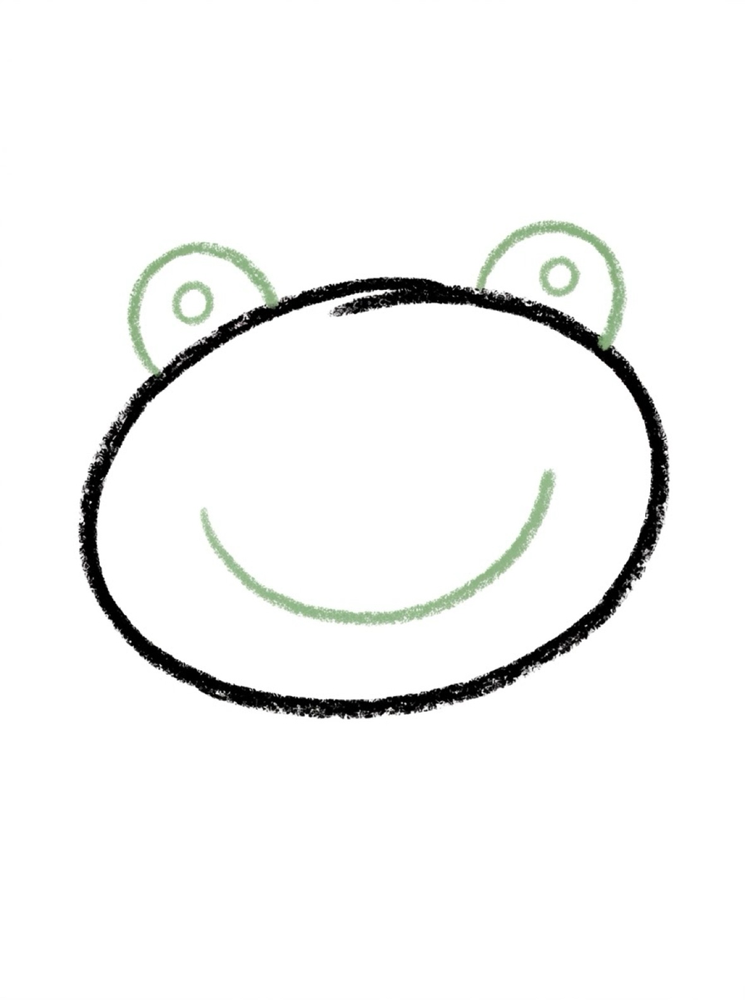
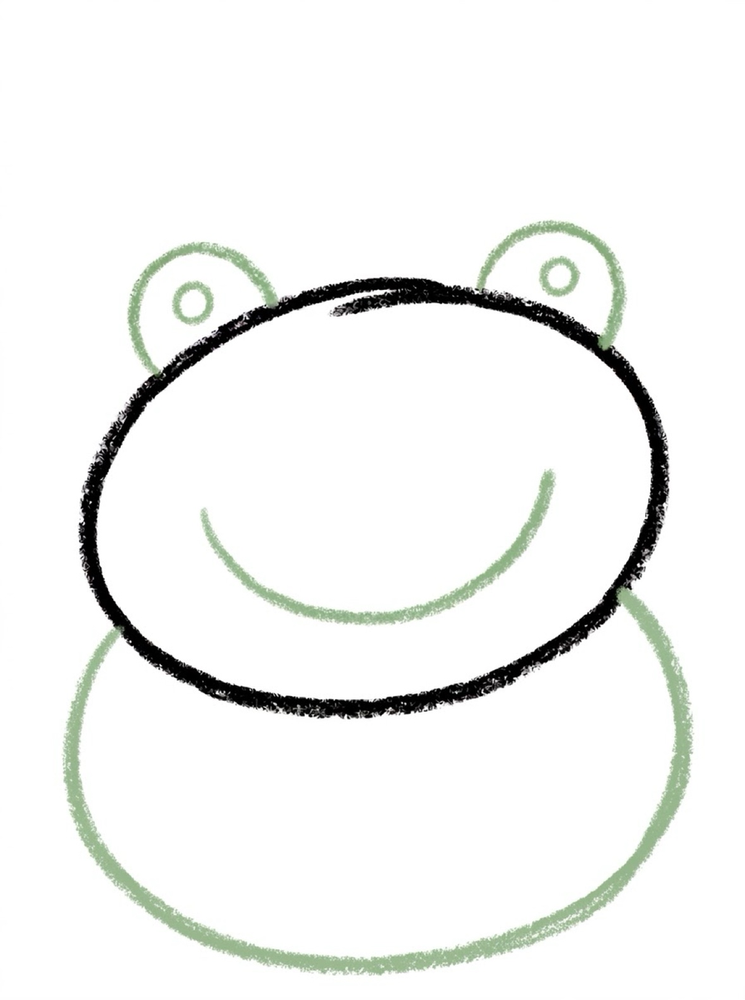
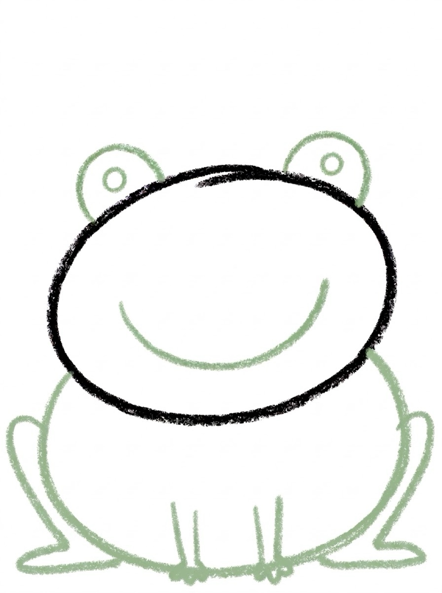
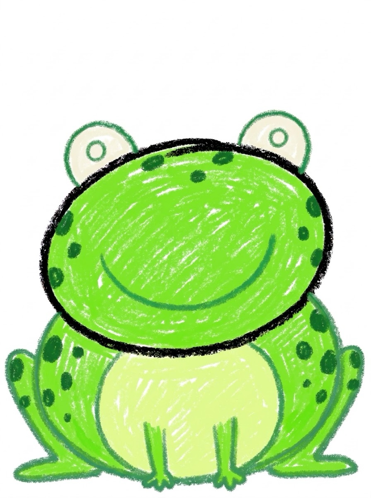

Frog Drawing for Kids How to Draw a Frog in 6 Easy Steps
Quick Answer
This free step-by-step tutorial shows kids how to draw a frog in six easy steps: a wide oval, bumpy eyes, a big smile, a body, long legs, and spots. Download the printable PDF, grab crayons, and follow along together. Made for ages 4 and up — no signup needed, just print and draw.
At a Glance
- Subject: How to draw a frog
- Ages: 3+
- Steps: 6 steps
- Time: ~10 min
- Difficulty: Easy
- Supplies: Paper, crayons
Frogs are the comedians of the drawing world — those boggle eyes on top of the head make every frog look surprised about something. Kids can't draw this one without giggling, which is exactly the point.
✏️ How to Draw a Frog: Step by Step
One step per box — draw each new part in a different color so kids can see exactly what changed.
Step 1: The Wide Oval

Draw a wide sideways oval for the frog's body — nice and plump.
Step 2: Eye Bumps

Draw two half-circles poking up from the top of the oval, like bumps. Frogs' eyes sit on top!
Step 3: Smile and Eyes

Draw a big curved smile across the oval and two dot eyes inside the bumps.
Step 4: The Body Shape

Round out the oval a little more underneath — frogs are adorably chubby.
Step 5: Long Legs

Draw two long folded back legs on the sides, like sideways L shapes, plus two small front legs.
Step 6: Spots and Color

Add spots on the back and color it bright frog-green with a lighter belly!
📊 Frog Drawing by Age
Every age can join in — just adjust the job.
| Age | What they can do | Tip |
|---|---|---|
| 3–4 | Trace the oval and eye bumps | The folded legs are hard — let them draw simple straight legs |
| 4–5 | Draw the oval, bumps, and smile with help | Exaggerate the eye bumps — bigger is funnier |
| 6+ | Draw the whole frog solo | Challenge: draw the frog mid-jump with motion lines |
🖨️ Download Your Free Frog Drawing Printable
The printable lays out all 6 steps one per box, big enough for little hands — kids draw right alongside each step.
⬇️ Open Free Printable 🖨️ Print🎁 Free printable for ages 3+
🐸 Lily Pad Pond
Draw a big green lily pad under your frog (a circle with a triangle bite taken out), add blue wavy water around it, and a second tiny frog. The pond turns one drawing into a habitat — and kids who draw habitats start asking questions about real frogs.
What You'll Need to Draw a Frog
Green, green, green — two shades if possible (darker for the body outline, lighter for the belly). White for the eye bumps with black pupils. The big circle eyes are the frog's signature, so make them nice and round. White paper works fine; green pops against it naturally.
What They're Learning
Frogs are circles stacked on circles — the body, the eye bumps, even the smile curve. It reinforces that the same shape at different sizes creates different parts. The wide smile (a big U curve) is excellent practice for controlled curved lines, and placing the eyes on top of the head (not on the face) teaches thinking about 3D placement on a flat page.
Make It Yours
Give your frog a fly to catch — draw a dotted line from the tongue to a little bug. A prince frog with a tiny crown is a storybook classic. Draw it on a lily pad with water ripples around it, or make a whole pond scene with two frogs and a dragonfly. Red-eyed tree frog colors (bright green + orange feet) are a fun exotic twist.
🛒 Our Favorite Drawing Supplies
These are the supplies we reach for in our own home — washable (because kids), quality paper, and enough colors to avoid fights.
As an Amazon Associate, MomYouNeedThis earns from qualifying purchases — at no extra cost to you.
🐸 Cute Frog Drawing
A cute frog drawing is mostly circles: a round body, two eye bumps on top, and a wide smile. The cuteness comes from the big eyes and the huge grin — and those are also the easiest parts to draw. A cute frog drawing is one of the best first drawings for a preschooler because every shape is round.
To make a cute frog drawing even cuter, make the eyes big and the smile wide. Two white circles with black dot pupils, plus a U-shaped smile that stretches across the whole face. That is the whole cute frog drawing formula: big eyes, big smile, round body.
Once kids can draw a cute frog drawing, they can add a lily pad, a fly, or a tiny crown. The frog is the base; the scene is where their imagination takes over.
See free frog printable for more.
❓ Frog Drawing FAQs
What is the easiest way for a kid to draw a frog?
Draw a wide plump oval, then add two half-circle eye bumps poking up from the top — that's the frog's signature look. Add a big smile, dot eyes, folded back legs, and spots. The eye bumps make it instantly a frog.
What age can kids start learning to draw a frog?
Most kids can draw the oval and eye bumps around age 4 with help, and the full frog solo by 5 or 6. The folded back legs are the trickiest part for little hands.
What supplies do we need to draw a frog?
Paper and crayons or markers — bright green is a must. The free printable PDF lays out all six steps one per box so kids can draw right alongside each step.
Is the frog drawing printable really free?
Yes — every printable on MomYouNeedThis is 100% free to download and print. No signup, no payment, just tap the download button.
How do I print the frog drawing tutorial?
Open the PDF and print at 100% scale (not 'fit to page') so the drawing boxes stay big enough for little hands. The printable is designed to stay large — never shrunk to force a fit.
How do you draw a cute frog drawing?
A cute frog drawing uses circles: a round body, two eye bumps on top, big white eyes with dot pupils, and a wide U-shaped smile. That big-eyes-big-smile formula is what makes a cute frog drawing look adorable — and it only takes six steps.
📚 Keep Exploring
- ✏️ All 76 Drawing Tutorials 76 free step-by-step drawing tutorials for kids.
- 🐾 Animal Coloring Free printable animal coloring pages for little learners.
- ✏️ Drawing Practice Free printable drawing pre-writing worksheet for toddlers.